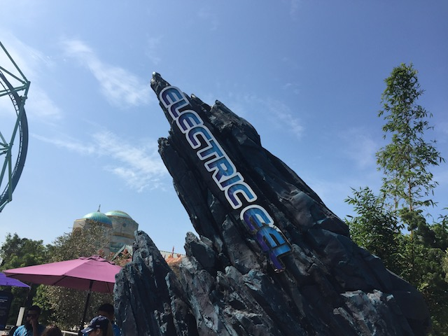
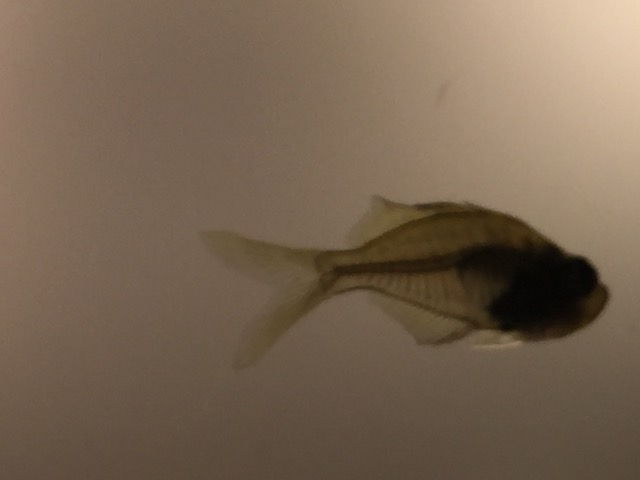
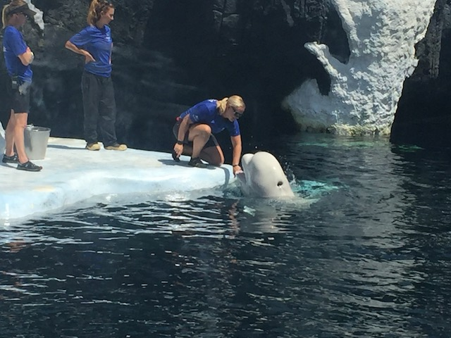

| |
Sea World San Diego 2018
All right. We're back at Sea World. It's been a while since our last visit, which was 5 years ago. I really like Sea World, but I generally don't go often since...it's expensive and far away. But something drove me back to the park this year. Hmm. I wonder what that could be?
Normally, I'd actually say that you were a lazy asshole for not just ordering the ticket online, but not only is really quick here, but it's also actually slightly cheaper here.
We're actually not getting just a ticket. We're getting a Season Pass, considering the fact that it's good for not just 2018, but 365 days. And I not only plan on going back to Sea World next year, but I'm also hoping to use this at Aquatica, and not to mention, this pass'll come in handy for next year, when it's good for getting me into a certain Busch Gardens park I've never been to and planning on getting to next year.;)
 I'm super happy to be back here again.
I'm super happy to be back here again.
Ooh! Another ride at Sea World! Sure, it may be closed and is a kids ride. But look! Another ride at Sea World!
 Hi big SBNO lawn ornament failure.
Hi big SBNO lawn ornament failure.

No more beating around the bush. Time for us to head out and finally check out their new coaster, and the reason we came down to Sea World this year. Electric Eel.
So Electric Eel is one of those Premier Sky Rockets that have recently been popping up like daisies and have been branded "The New Batman: The Ride" because yeah. These rides are a lot of fun.
Don't worry. That's not nearly as long as the sign makes it seem.
I mean it! It's not that bad!
OK. I have one complaint about Electric Eel. They have a "Nothing in Pockets rule". Yep. They make the same mistake of not realizing how ZIPPERED pockets work, and that you can't lose anything in zippered pockets. And if you know me, Zipper Rules are one of my biggest pet peeves. I really hate blind zipper rules. Though to give credit to Sea World, out of all the places that have the stupid Zipper Rule, they do run it by far the best. You can actually have stuff with you in line unlike Cedar Point recently did with Steel Vengeance (Boy, we really had GREAT timing with our trip to avoid that stupid bullsh*t). It's only gone for the ride. One train operations mean I don't have to worry about someone taking my stuff (I generally don't trust cubbies for really valuable items). And it's just the easiest out of all the stupid zippered rules. Plus, I have more sympathy for Sea World's Electric Eel story than for ANY of the other parks stories that they use to justify stupid zipper rules. Still wish that parks would realize the difference between regular pockets and ZIPPER pockets, and I still dissaprove of the rule. Thumbs down.
Oh crap! This thing has the comfort collars. *groan*
So the comfort collars are...interesting. They're not quite as bad as people make them out. They don't hurt. But at the same time, they're not comfortable. They may not hurt, but you do notice them. I'd prefer it if the Busch parks didn't put them on their Sky Rockets, but they're still really fun rides.
 On top of that, the bigger cars make it less snappy than Superman @ SFDK. But still. Really fun ride.
On top of that, the bigger cars make it less snappy than Superman @ SFDK. But still. Really fun ride.
 Hey! I'm fun too! Don't forget about me!
Hey! I'm fun too! Don't forget about me!
I love Manta is such a people eater that it damn near never has a line.
Electric Eel is good and all, but I think I'd still go with Manta as my favorite Sea World coaster. This coaster seriously packs a good punch.
Another example of "Size doesn't matter".
Hey look! Our Manta Ray friend came back out to see us today. =)
I wonder what sort of animal exhibit that could be?
Hmm. Something tells me that I'm gonna be going there very soon. =)
Ooh. They have piranahs here that you can check out.
Sorry Billy. I know couldn't afford your Sea World ticket. So now you gotta pay for it by becoming Piranah Chow.
Fun fact. Piranah's aren't nearly as dangerous as you think.
*gasp* The Blackfish people were right! Sea World really does abuse animals! Just look at the way they let this poor fish get eaten! ='(
All right. I've been holding my tongue about the elephant in the room (Mostly, I did make an Anti-Blackfish joke right before this photo). Now if you've read the site, you probably know that I support Sea World and hate that stupid bullsh*t "documentary" Blackfish. And in a Sea World update, I want to constantly point out its bullsh*t and debunk its claims. However, it would not be a good update if half of the captions were just "F*CK BLACKFISH!!!". That'd be repetitive, uninteresting, and not what I want. I was planning on just doing a big official Anti-Blackfish Essay rebutting the bullsh*t that it spews out. But my god. I do NOT have that sort of time right now. I'm busy enough as is. But hopefully, when I come back to Sea World in 2019 (I will get on Tidal Twister next year,) I'll have the Anti-Blackfish essay done and then in the future, I can just point to that and send a link whenever I want to just rant about Blackfish. Just copy, and paste. But for now, let's just move on and continue to enjoy Sea World.
Yes. They have sea turtles here too.
"I gotta get away from this jackass. But where should I go? Hmm. I bet he'll never find me over here."
For those of you angry at me for not sharing the kaleiodoscope, well, here you go. You're welcome.

Excuse me sir. Your skeleton is showing.
 We're now checking out the Clyde and Seymour show. I know I saw the Christmas version of this show 11 years ago, but never saw the actual regular show until now. It's cute. They have some corny jokes, but that's to be expected. And hey. You do get to see some sea lions,
We're now checking out the Clyde and Seymour show. I know I saw the Christmas version of this show 11 years ago, but never saw the actual regular show until now. It's cute. They have some corny jokes, but that's to be expected. And hey. You do get to see some sea lions,
Is that another flamingo I see in the water!? Oh, it's just my reflection.
Hmm. There's something different about the Shamu show. I just can't put my finger on it.
Yeah. This isn't the Shamu Show. It's the new Orca Encounter that they added in 2015 to replace the Shamu Show.
Initially, I was against the change because of the reason that Sea World made the switch and I still stand by my original thoughts about "Don't try and appease these assholes! They want to see you destroyed! Nothing is ever good enough for them! F*ck them!". But the exhibit is really cool and they do teach a lot of cool stuff about Orcas here.
 Sorry bitches! I'm retired! I just lounge around and play all day while you all study me. =)
Sorry bitches! I'm retired! I just lounge around and play all day while you all study me. =)
HOLY SH*T!!! IT GOT CROWDED FAST!!!
Your iPhone is not part of a dolphin's balanced breakfast.
 Oh yeah. Might as well get on Journey. We're already here.
Oh yeah. Might as well get on Journey. We're already here.
 I'm very dissapointed in Journey. Pretty much all the theming is gone. The elevator lift is bare. There's no more soundtrack, and it's just a water coaster now. =(
I'm very dissapointed in Journey. Pretty much all the theming is gone. The elevator lift is bare. There's no more soundtrack, and it's just a water coaster now. =(
 Quick! Before it all melts thanks to global warming!
Quick! Before it all melts thanks to global warming!

Just getting my echolocation checked up.
I may look goofy with my big tusks, but make no mistake. I will f*cking kill you!
Another ride on Electric Eel before heading out sounds good.
 Electric Eel is a lot of fun and a great fit for Sea World. I'm really glad I got the chance to go down there and check it out. I'm definetly looking foreward to checking it out more next year.
Electric Eel is a lot of fun and a great fit for Sea World. I'm really glad I got the chance to go down there and check it out. I'm definetly looking foreward to checking it out more next year.
Home
|